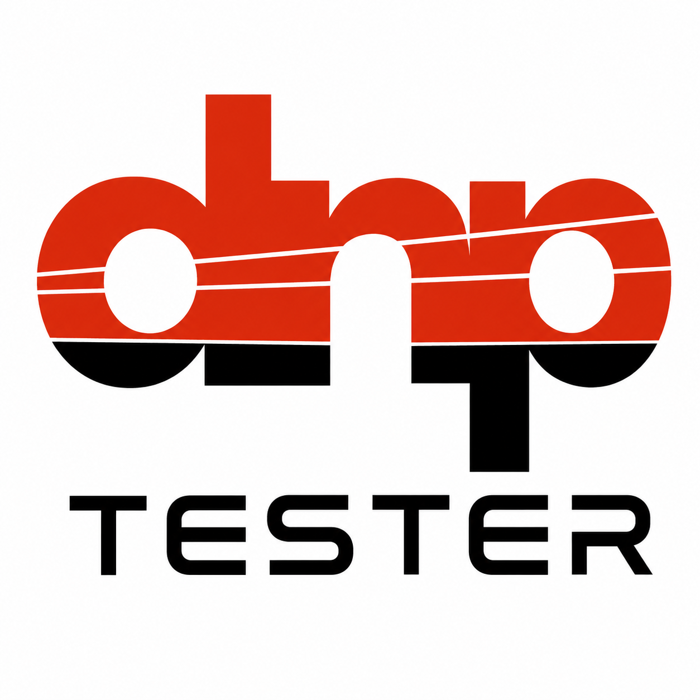

Test IEDs and relays
Connect to a DNP3 outstation, run polling, inspect decoded points, and confirm that the device is truly responding.

DNP3 Interoperability Tester by MasArrayMasArray portfolio project for DNP3 commissioning, FAT, and troubleshooting
A Windows desktop DNP3 master tester for protection relay FAT, SCADA signal troubleshooting, command lifecycle checks, timestamp review, and automated report evidence.
Why engineers try it
Use it when you need more than a connect button and a raw log. The app is organized around the practical questions engineers face during relay FAT, SCADA integration, protocol communication testing, data communication learning, and field troubleshooting.
Connect to a DNP3 outstation, run polling, inspect decoded points, and confirm that the device is truly responding.
Follow values, events, SOE rows, source reasons, flags, and link traces when a signal is missing, stale, inverted, or timestamp-invalid.
Collect identity, point verification, command, non-operation, recovery, SOE, and trace evidence into an exportable report.
See how the outstation behaves under class polling, static reads, events, command response, feedback, and recovery workflows.
Application screens
Guided FAT flow with QuestPDF preview and export-ready evidence.
Operator-facing events with IED timestamp basis and quality context.
Forensic rows for timestamp quality, variation, qualifier, and source reason.
Evidence engine
The app separates open-port state from real device response and stores protocol evidence that can be reviewed before exporting a FAT report.
FAT reporting
The report workspace is built to avoid the common FAT problem: beautiful output with unclear evidence. It tracks executed items, open items, failed items, warnings, and technical result separately.
Windows release
GitHub Releases is the canonical place for installer assets, release notes, checksums, and version history.
Open-source readiness
The application source can be published under the repository license, but third-party dependencies remain governed by their own terms. The Step Function I/O DNP3 library must be reviewed separately before commercial or production distribution.